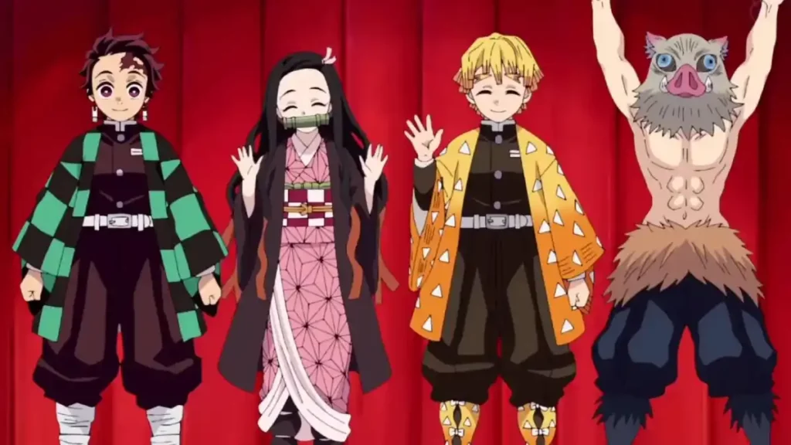
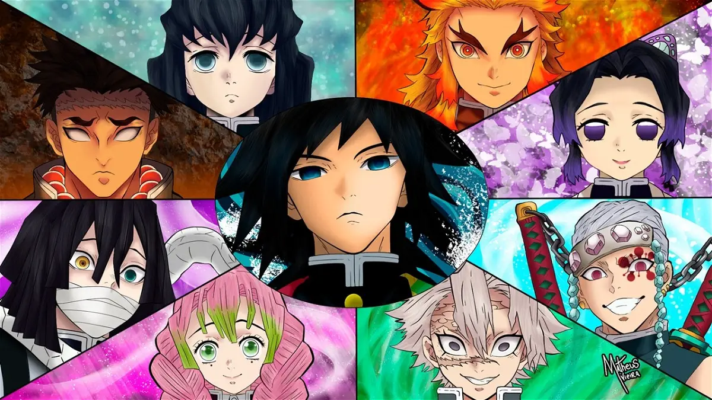

Demon Slayer Friki Web

MATADEMONIOS
Los Cazadores de Demonios también conocidos como el Cuerpo de Demon Slayers, es una organización que ha existido desde la antigüedad, dedicada a proteger a la humanidad de los demonios. Hay cientos de asesinos de demonios dentro de la organización, pero actúan en secreto incluso desde el gobierno japonés.

PILARES
Los Pilares son los nueve espadachines más poderosos entre los Cazadores de Demonios, liderados por Kagaya Ubuyashiki, siendo una parte vital del Cuerpo de Exterminio de Demonios. Cada uno posee un distinto tipo de estilo de respiración que fueron capaces de perfeccionar entrenando a muerte.

LUNAS SUPERIORES
Las seis Lunas Crecientes o Superiores. Las Doce Lunas se dividen en dos grupos: Lunas Superiores (también llamadas Lunas Crecientes) y Lunas Inferiores (o Lunas Menguantes). Cada una posee un número que se encuentra reflejado en sus ojos. Kokushibo (Luna Superior Uno) Es el más poderoso de todas las lunas superiores.